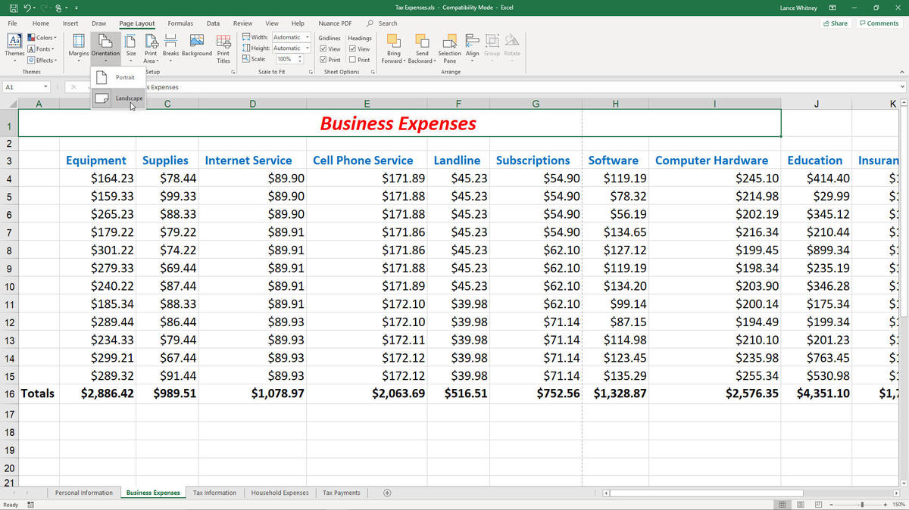
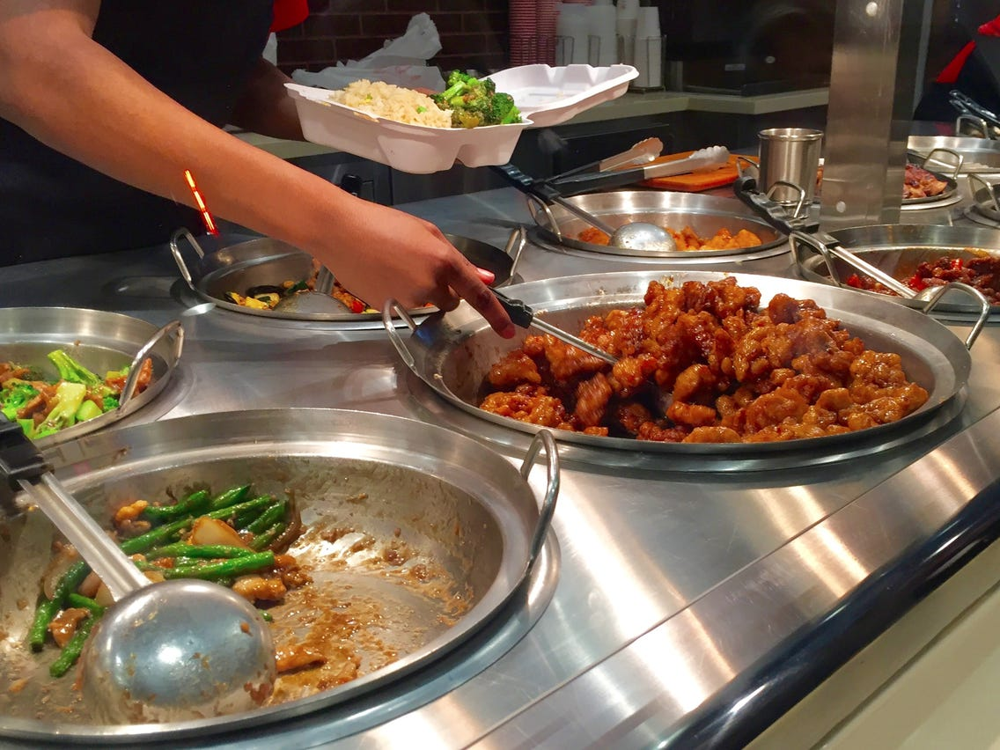
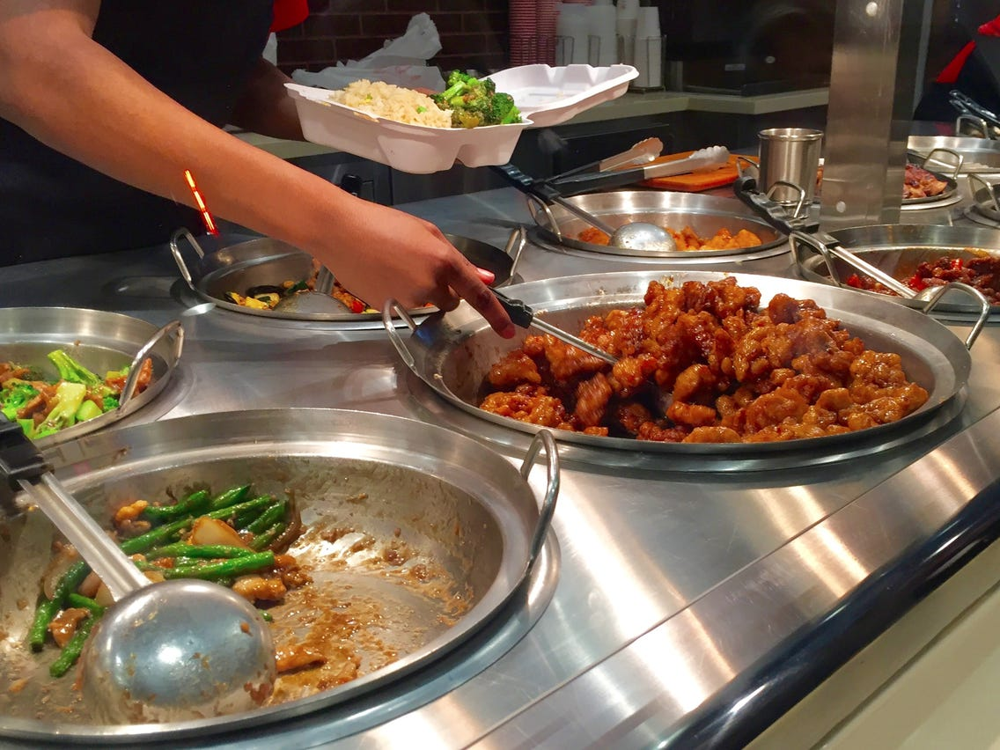
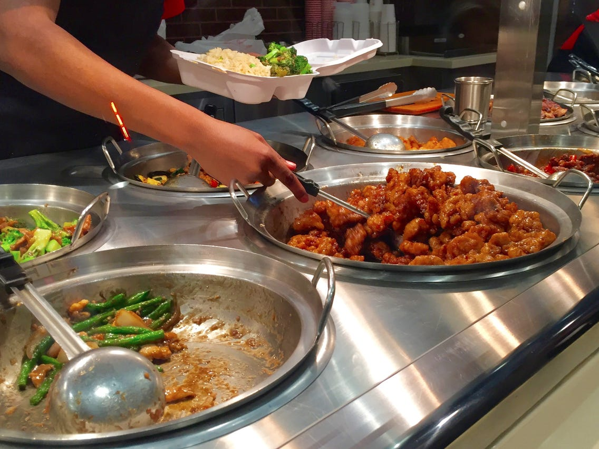

Kevin Alpers
I am a person that has an interest in many things. I enjoy sports, such as football and basketball. It is fun to be able to
go outside and play these sports with my family and friends. Some hobbies I enjoy doing include swimming and working out. In the Summer, it
gets very hot, especially in Riverside, which makes swimming very relaxing. Working out is something I do to stay in shape and be healthy. Other
things I like to do are collecting shoes and playing video games on my downtime. I am a huge sneakerhead, and I love collecting Retro Jordans. I
almost have all of the retro Jordans you can think of. I also love to play video games with my friends. I am a fun and likable person that is
easy to talk to. I like to have conversations with my co-workers and friends about a lot of things that don't relate to the activities listed above
too, such as talking about stocks and investments. Stocks and investmenets interest me as it shows me where the economy is heading and what new
technology is in demand.
I have worked a variety of jobs throughout my life so far. The first place I ever got a job at was Wendy's. I was in the fast food industry for a
while. I ended up quitting that job, and I started working at Panda Express. While I was working at these fast food restaurants, I would always
help the customers with their needs, and I was able to multitask with things that had to be done at the restaurant. Eventually, I got tired of the
fast food restaurant, and I started working at Amazon. They paid me better, and I was able to get more hours. I would work at a station packaging
boxes. I would have to work very fast and efficiently to keep up the pace. After I finished working at Amazon, I finally decided to pursue a job
that involved my degree. I started to work at an accounting firm known as Deloitte, where I would prepare financial statements for companies and
complete their taxes. I worked there for about two years learning a lot from my peers and mentors.
My education all started at the University of California, Riverside where I majored in business and concentrated in accounting. I would be an
excellent student and I had a 4.0 GPA when I graduated. I minored in computer science where it helped me hone my ability to use a computer well. I
would graduate a summa cum laude and finished in three years. I eventually decided to take the Certified Public Accountant Exam and pass with
flying colors. After finding a job with my CPA license, I decided to go back to school at the University of Southern California, where I went to
pursue my MBA in accounting. It was very rigorous, but eventually, I finished it and I got my MBA. I have a variety of work experience working in
the field and interacting with other people. If you are interested in hiring me, feel free to contact me through the following links.
Experience
Wendy's Crew Member
• Greet customers upon arrival
• Assist customers and prepare food
• Answer any questions the customer has
• Work the cash register and drive-thru window
• Clean dining room and kitchen
• Restock items
Panda Express Crew Member
• Greet customers upon arrival
• Ask customer if they are interested in samples
• Change food pans
• Work the cash register
• Clean dining room and kitchen
• Restock items
Amazon Warehouse Team Member
• Packing and shipping customer orders
• Receiving and processing incoming stock and material
• picking and filling orders from stock
• Managing, ordering, and retrieving stock
Certified Public Accountant
• Overseeing audits
• Preparing and analyzing reports on transactions
• Studying financial records
• Organizing and updating accounting records as needed
• Preparing tax reforms
Education
University of Southern California
CPA License
University of California Riverside
Portfolio

 

